Scientific Classification
| Kingdom | Animalia | Animal | Animals |
|---|---|---|---|
| Phylum | Chordata | Chorda | Corded |
| Clade | Synapsida | σῠ́ν + ἁψῑ́ς | Fused Arched |
| Class | Eupelycosauria | ἐΰς + πέλυξ + σαῦρος | True Basin Lizards |
| Clade | Therapsida | θηρῐ́ον + ἁψῑ́ς | Beast Arched |
| Clade | Therocephalia | θηρῐ́ον + κεφᾰλή | Beast Headed |
| Order | Eborfeltheria | ebur + fel + θηρῐ́ον | Tainted Ivory Beast |
Taxonomic note: Eborfeltheria is a clade of therocephalian therapsids, and therefore belongs to the broader synapsid lineage that also includes cynodonts and mammals. Their closest known Earth relatives are thought to have been venomous therocephalians related to Euchambersia, although the exact ancestry of Eborfeltheria remains uncertain. The group is not considered mammalian despite possessing several traits that superficially resemble those of mammals. The name Eborfeltheria, approximately meaning "tainted ivory beast," refers to the unusual combination of derived therapsid characteristics found throughout the clade.
01 · INTRODUCTION
Overview

The Eborfeltherians, traditionally classified within the therocephalian synapsids, are a highly derived radiation of non-mammalian Kaimeran endemic therapsids whose modern diversity is concentrated primarily on the Permian Islands. Their lineage is ultimately derived from therocephalians related to the venomous Euchambersia and represents one of the most successful examples of therocephalian survival and diversification on Kaimere. Although their ancestry lies among the small predatory therapsids of the Permian, more than two hundred and fifty million years of independent evolution have produced a lineage encompassing predators, herbivores, omnivores, burrowers, aquatic specialists, and volant forms.
Eborfeltherians are united by several unusual characteristics that distinguish them from other surviving therapsids. The most conspicuous is their possession of external ears, a feature exceptionally unusual among non-mammalian therapsids. Unlike mammalian ears, however, the eborfeltherian auditory apparatus is positioned low along the posterior region of the jaw. Large, frog-like tympanic membranes are surrounded by movable external lobes that can be adjusted to direct sound toward the ear. These structures vary considerably among the different lineages. Gomphoceratians possess relatively simple auditory lobes and are particularly specialized for lower-frequency sounds, whereas paramacropods evolved considerably more sophisticated auditory systems capable of detecting both low and high frequencies.
The skull of an eborfeltherian is consequently unusually broad. Much of this width accommodates the large jaw musculature and brain while minimizing interference with the exposed auditory structures. Their hearing nevertheless varies substantially among lineages. The ancestral condition appears to have favored lower-frequency sounds and possibly infrasound, while the more derived paramacropods evolved a secondary auditory apparatus that greatly expanded their usable frequency range.
Another defining characteristic is the widespread retention of venom. Eborfeltherians are believed to descend from a venomous therocephalian, probably related to Euchambersia. Although venom was originally associated primarily with predation, it subsequently acquired numerous functions throughout the radiation. Predatory species use venom to subdue prey, while in several groups it became involved in intraspecific combat. In some herbivorous lineages the venom glands became greatly reduced as the animals became increasingly specialized for feeding and developed powerful chewing structures.
The loss of conventional post-canine teeth was accompanied by the evolution of one of the most characteristic eborfeltherian structures: the gomphocorn teeth. These are keratinous post-canine tooth analogues that possess an enamel-like mineralized surface. Rather than being true teeth, they function as durable chewing surfaces and evolved convergently with the feeding structures of baleen whales. Their form varies according to diet. Herbivores developed broad, molar-like structures capable of processing tough vegetation, while predatory gomphoceratians evolved particularly robust versions capable of crushing and slicing hard material, including bone.
Eborfeltherians also possess a distinctive integument composed of branching filaments known as pterempalins. These structures superficially resemble feathers but are neither true feathers nor conventional mammalian hair. They grow from follicles as branching filaments and mature rapidly before being shed and replaced. The overcoat consists of completed structures, while the undercoat contains more fragile, continuously developing filaments. The latter readily break apart and collect dust and other particles, which can then be removed during grooming. The ancestral function of pterempalins was probably insulation in the small-bodied ancestors of the radiation, but the structures subsequently became important in thermoregulation and protection across the diverse modern groups.
Their respiratory system is similarly distinctive. Eborfeltherians possess a diaphragm, although it differs substantially from the mammalian diaphragm. Rather than being primarily derived from musculature near the neck and thorax, the eborfeltherian diaphragm is positioned much farther back in the abdomen and attaches to the pelvis and posterior ribs. This arrangement draws the viscera backward during contraction and assists in pulling air into the lungs. Its position also allows respiration to become closely integrated with locomotion. In hopping forms, individual strides can assist ventilation, while in flying dragons the movement of the wings contributes to air intake. The system is less efficient than the highly specialized air-sac respiratory systems of birds, dinosaurs, and pterosaurs, but provides considerable respiratory power during sustained activity compared to mammals.
Most eborfeltherians possess exceptionally good color vision, and many species are capable of detecting ultraviolet wavelengths. Combined with their auditory specializations, this gives the group a sophisticated sensory repertoire despite their ancient therapsid ancestry.
Taxonomically, Eborfeltheria is divided into two principal lineages: Gomphoceratia and Paramacropodia. Both contain predators and herbivores, although they followed substantially different evolutionary trajectories. Gomphoceratia includes the Sphinxidae, or sphinxes, which became powerful terrestrial predators, and the Gomphoceratidae, or palatheres, which became primarily herbivorous. Paramacropodia is considerably more diverse and includes burrowing, terrestrial, arboreal, saltatorial, semi-aquatic, and fully aquatic forms, as well as the remarkable draconiiformes that eventually evolved gliding and powered flight.
02 · DEEP TIME
Evolutionary History
Origins Among the Therocephalians
The evolutionary foundations of Eborfeltheria extend back to the Permian Dynasty, when therocephalians were already an important component of Kaimeran ecosystems. On Earth, therocephalians disappeared during the Triassic, but on Kaimere their lineage persisted and diversified after the ecological conditions of the Permian Dynasty separated them from their terrestrial relatives elsewhere.
During the period when gorgonopsids dominated the large-predator guild, therocephalians generally occupied subordinate positions. The enormous gorgonopsids could achieve sizes that were difficult for the smaller, metabolically demanding therocephalians to match. Consequently, many therocephalians increasingly relied upon characteristics other than sheer size, including intelligence, social behavior, specialized predation, and venom.
Venom was particularly significant. A venomous therocephalian ancestor is generally considered the most likely source of the venom system eventually inherited by Eborfeltherians. However it remains possible that the glands ancestral to the Eborfeltherian venom system had another function and that venom evolved independently within the lineage.
This uncertainty does not change the larger evolutionary pattern. Eborfeltherians inherited a combination of relatively high metabolism, sophisticated nervous systems, and some form of venomous capability. These characteristics would become central to their later radiation.
The Great Calamity and the Rise of Eborfeltherians
The evolutionary history of the modern Eborfeltherians was shaped most strongly by the extinction that ended the Permian Dynasty. The larger therocephalians, whose rapid metabolisms demanded substantial food supplies, were among the animals most severely affected. Many of the large forms disappeared, while smaller and more ecologically flexible therapsids survived.
The Permian Islands became an important refuge. Cynodonts initially became some of the dominant predators and herbivores of the islands, eventually producing a large and diverse fauna during the Tyrant Dynasty. Most of these animals, however, were eliminated during the Dynastic Extinction approximately 15 million years ago.
The extinction removed much of the existing megafauna, particularly animals exceeding approximately fifty kilograms. Its ecological consequences were therefore profound. The forests and savannas of the Permian Islands were suddenly left with enormous quantities of nutrients released from decaying organisms and volcanic ash. This created a period of ecological abundance in which surviving lineages could rapidly diversify.
In northern Septenia, a previously inconspicuous lineage of therocephalians underwent an explosive adaptive radiation. This radiation produced the Eborfeltherians. The name Eborfeltheria, approximately meaning "tainted ivory beast," refers to this distinctive lineage of highly derived therocephalians. Their subsequent diversification transformed them from relatively obscure survivors into one of the dominant groups of terrestrial vertebrates on the Permian Islands.
Evolution After the Dynastic Extinction
The radiation of Eborfeltherians did not end with their initial expansion following the Dynastic Extinction. The survival of redcrown vegetation created enormous new opportunities for herbivores, which in turn supported increasingly large predators.
During the succeeding millions of years, the Permian Islands developed ecosystems dominated by enormous herbivores and the predators that followed them. Palatheres became particularly successful on the redcrown savannas, while sphinxes and paramacropods exploited the resulting abundance of prey. This produced a complex ecological system in which Eborfeltherians occupied almost every major terrestrial predator and herbivore niche. Some remained small enough to exploit burrows and forest understory, while others became among the largest terrestrial animals on the islands.
Their evolutionary success was therefore not simply the result of a single adaptation. Instead, it resulted from the combination of a flexible ancestral body plan, sophisticated sensory systems, venom, rapid metabolism, high intelligence, specialized dentition, and the ability to repeatedly modify locomotion and feeding behavior.
The Age of Dragons
The final major disruption to the Eborfeltherian radiation came not from another natural extinction but from the emergence of enormous dragons associated with the island's later history.
For much of their evolutionary history, the Permian Islands possessed numerous large predators, including sphinxes, sabretooth hounds, and other Eborfeltherian macropredators. These predators competed directly with one another while regulating populations of the enormous herbivores.
The release of magically enhanced dragons approximately 1,200 years ago radically altered this system. These dragons possessed enormous bodies, increased venom production, and extremely demanding metabolisms. Their emergence created unprecedented predation pressure on the large fauna of the islands. The largest sphinxes and sabretooth hounds were among the principal casualties. Several giant predator lineages disappeared rapidly as dragons consumed both their prey and their competitors. The extinction of large herbivores then caused a secondary collapse among predators dependent upon them.
Smaller and more generalized Eborfeltherians proved considerably more resilient. Laelaps, for example, benefited from being nocturnal, omnivorous, intelligent, social, and capable of hunting prey larger than themselves with the aid of venom. Rather than competing directly with dragons, they exploited ecological opportunities created by their dominance.
03 · SPECIES ACCOUNTS
Known Diversity
The following accounts document representative eborfeltherians recorded in the encyclopedia. Select a species to consult its individual natural history and descriptive account.
Spade-Hogs
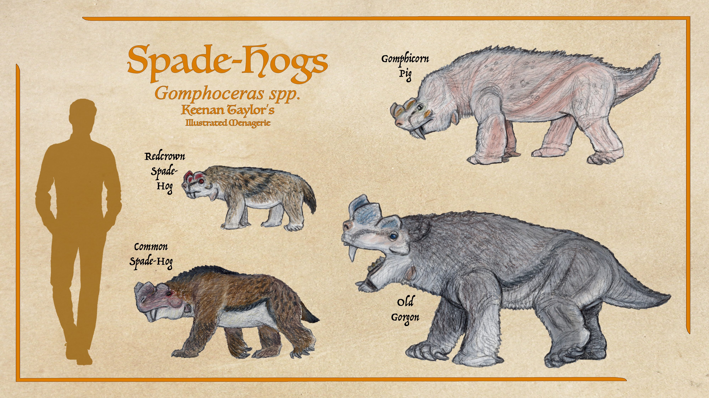
Gomphoceras spp.
Gomphoceras is a widespread genus of spade hogs or gomphocorns that are the name-bearing members of the gomphoceratian clade. They are within the Gomphoceratinae subfamily. They have particularly robust gomphocorn teeth. These molars grow in quickly so they must chew regularly. Luckily, they eat a lot of abrasive redcrown grasses, so this isn't an issue. The taxonomy of many of these gomphocorns or spade-hogs is quite debated because Gomphoceras is an extremely basal genus, looking unchanged from Tyrant Dynasty ancestors. There are numerous small species that may belong to other basal genera though most favor subgenera.
Read Common Spade-Hog article → Read Redcrown Spade-Hog article → Read Old Gorgon article → Read Gomphicorn Pig article →Ypotryll
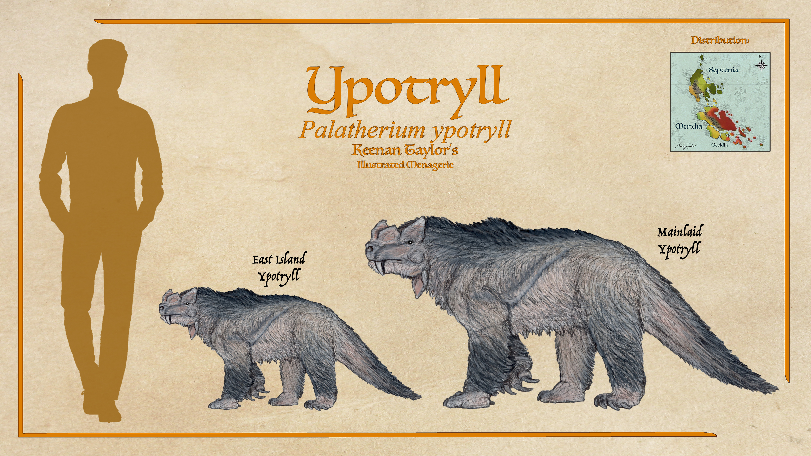
Palatherium ypotryll
Gorgons and excavator boars are just a few of the numerous Assembly common names for Palatherium, a genus with a debated number of species throughout the archipelago. They are also within the same subfamily as the spade hogs. Gorgons can also standing on its hindquarters. The smallest, the jungle palathere or ypotryll, is typically around the size of an American black bear, with males usually standing just under a meter at the hip and shoulder hump, and weighing in at around 200 — 300 kilograms. The mainland population is within this size range, but within the tropical islands east of Meridia, the ypotryll is small enough to rival some spade hogs in size. Because they reside in the tropics, they look naked, though do possess a dusting of sparse and very simple pterempalin filaments along their backs. They have the longest tail of the genus, and a fat hump over their shoulder more exaggerated than related species, and are the only Palatherium species known to climb. Some consider the ypotryll to deserve its own genus, as they look and act fairly distinct, but for now, consensus remains that they are in Palatherium.
Read species article →Excavator Boar
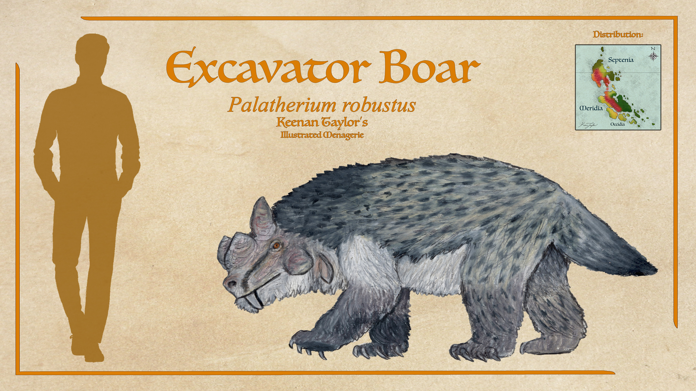
Palatherium robustus
The excavator boar averages only slightly larger than the ypotryll, and are commonplace in the highlands of both Septenia and Meridia. They have only a slightly greater hip height, though are a lot more robust, with males weighing up a ton. They get their name for being exceptionally proficient diggers, burrowing simple tunnels in which they sleep. They are quite abundant. Despite this, because the mountains in which they reside are not easily accessible to Assembly researchers, they are not well documented firsthand, though between Bolondakir librarians and native naturalists, they are still fairly well understood. They primarily feed on redcrown grasses, true grass, conifer bark and cones, and the occasional small game or scavenged meat. Though not as acrobatic as mountain fawns they live alongside, with strong claws and limbs, they are still deft mountaineers.
Read species article →Septenian Gorgon
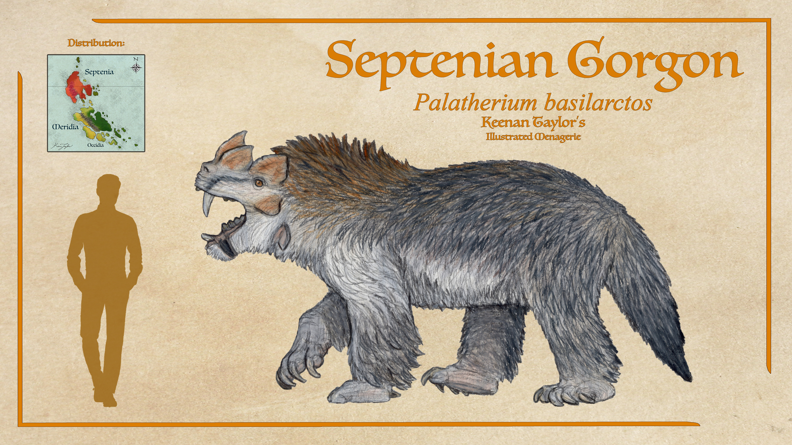
Palatherium basilarctos
The Septenian gorgon is the northernmost palathere and largest member of this genus. Female Septenian gorgons usually weigh around a ton and live in small clans of 2 — 5 adults and their young. Males often weigh two tons and are either solitary or live in pairs, and large dominant boars can weigh three at their peak seasonal weight. They create simple dens that are enormous, large enough to be very popular among dragons when dug at higher elevation. They are versatile, packing in a wide range of redcrown grasses, fruit, leaves, mast, eggs, scavenged meat, and the occasional hunted game. As their species name suggests, they occupy a niche similar to brown bears, if on the more herbivorous side of the omnivore spectrum. They are still more carnivorous than any other palathere. They are not especially proficient killers, with attacks described as a horrific act of clumsy brutality, using brawn and claws to pin and slash and biting the face, hands, or any part that moves. Septenian sphinx attacks usually end in death and feeding, and are more common, yet the Septenian gorgon is often considered more fearsome, as their attacks are messier, less likely to be fatal though you will be horribly mutilated, and when they do make a kill little is consumed, leading to a false reputation that they kill for pleasure or boredom, not to feed. Like bears, they are also capable of standing into a bipedal posture.
Read species article →Gorgon
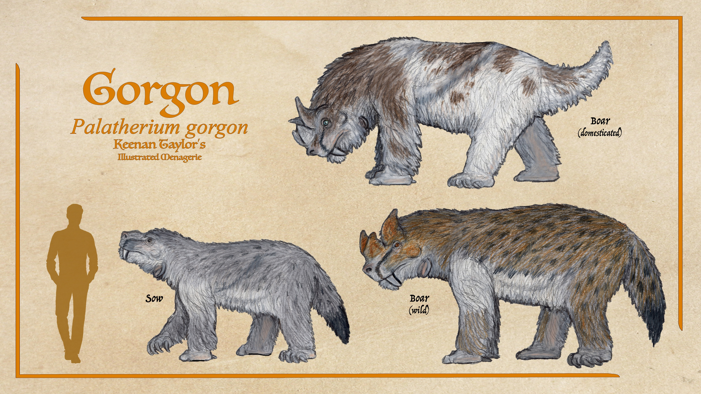
Palatherium gorgon
The Meridian gorgon, or common palathere, is the type species of the genus, Palatherium gorgon. Though a bit smaller, less densely furred, and tend to be more red and spotted than the Septenian gorgon, than their Septenian cousins, they are nevertheless quite similar, with it typically believed these two have a very recent common ancestor that swam from Septenia to Meridia within a quarter and half a million years ago. As gorgons are proficient swimmers, they still intermix now and then, though not with the frequency of the mountain palatheres which constitute a single if debated species.
Gorgons are also a lot more social than Septenian gorgons, though this may be a consequence of them tending to live in more open territory. Females, which weigh around 800 kilos, live in large herds comprised of many smaller clans in similar numbers to the excavator boars. Males are the most social of any palathere, often forming bachelor clans of 3 — 8 males that are usually at least distantly related in the same sow clan, if not part of the same broader herd. Gorgons will dig burrows, but in their lowland range, they often don't have this luxury. They are content to make a diet of almost exclusively redcrown grass, though they will take any sort of other foliage, carrion, eggs, and small game they can to get some versatility.
Read species article →Rustback Pentacorn
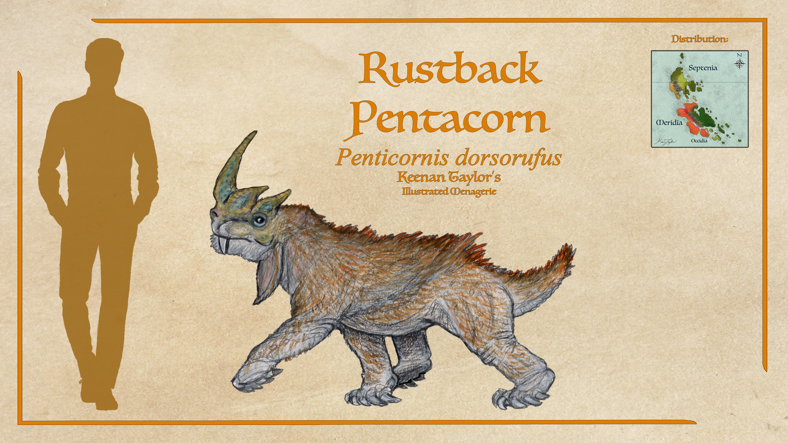
Pentacornis dorsorufus
The rustback pentacorn is one of the pygmy behemoths. They are found in open territories of Western Meridia and Occiadia. As daytime herbivores, they forage when many competitors hide in burrows to avoid the heat and attention from dragons. The genus is universally diurnal. They earn their names from their prominent five horns, with the nasal horn being the most elongated and pointed in bulls.
Read species article →Behemoth
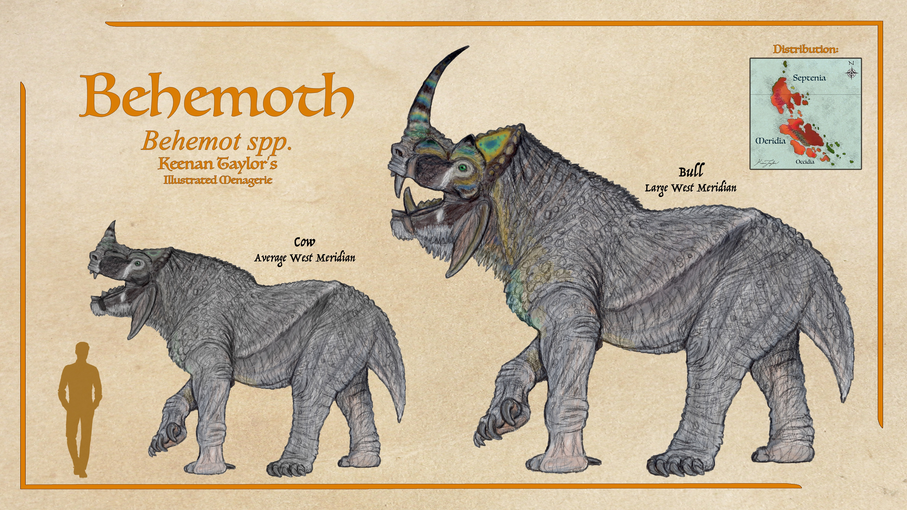
Behemot spp.
Behemot, originally Dracobehemoth, is a genus only distantly related to Palatherium, yet once included their members when Assembly naturalists first described the fauna of the island. These are the largest beasts of the Permian Islands. Up until recently, there were three species: the Septenian behemoth, the Meridian behemoth, and the Meridian oliphaunt.
Behemot stand out different from others of their subfamily aside from size along. Not only are the back to their skulls more expanded, but their gomphocorns have a particularly distinct morphology. While absent in cows, bulls have an elongated first gomphocorn that functions much like a tusk would. This tusk projects upwards and backwards, making it effective in display and combat.
Aside from fur coverage and, there's very little separating the Meridian behemoth and Septenian behemoths. Cows tend to range between 3 and 4 tons, while bulls range between 5 and 10. Both have cows that produce 1 — 3 clutches of 3 — 8 eggs, each weighing around 5 pounds, with clutch size and frequency driven by resource availability. Like gorgons, they protect their eggs and young, but don't provide for them. Oliphaunts had a similar reproductive strategy, but because they were more exposed, it didn't save them. Historically, Septenian behemoths were larger, but a population of Meridian behemoths now on the prairies has since become this genus's largest modern relative. They still rarely exceed ten tons, so have not taken up the full mantle of the lost oliphaunts, but they do fill in the legacy. Behemoth cows of both species tend to live in small groups of 3 — 5 individuals, males are usually solitary, though in the vast redcrown prairies of western Meridia, herds have been documented to consist of over a hundred cows and a dozen fringe bulls, indicating that they are much more socially comfortable than their usual situation in woodlands either allows necessitates.
Read Meridian Behemoth article → Read Septenian Behemoth article →Highland Sphinx
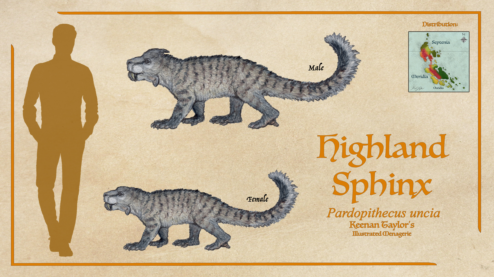
Pardopithecus uncia
Pardopithecus is a successful genus of horned lion from the Ceratoleoinae subfamily. Largest and most successful of this genus is the highland sphinx, a single species that spans both large main islands of Meridia and Septenia in their highland territories and is a sufficiently proficient swimmer that males are known to regularly span the straits between, making this generally considered a single species even if they are broadly isolated. Perhaps because the genus is more comfortable swimming than most relatives, they have settled on many islands. These often compete heavily with feral bast that escape human settlement for top order niches on these islands. Pardopithecus also have at least one species in the Meridian jungle, possibly three, though these are especially elusive and little is known about them. They have opposable thumbs on their feet, and the digits of their front paws are flexible, aiding in climbing.
Read species article →Horned Lion

Ceratoleo vunoensis
Ceratoleo is this clade at its ecological peak. The smallest of the three species, the horned lion itself, which occupies the mountains of Meridia and Septenia. It is not as proficient a swimmer as Pardopithecus but do still travel between Meridia and Septenia. These rivaled the mountain wyverns for ecological dominance of the highlands, hunting the same paramacropods, palatheres, and manticores before feral dragons replaced their wild mountain wyvern ancestors. Now, dragons are so much larger that the horned lion is more prey than competitor. Horned lions are most common in Septenia's highlands, but they have also island hopped to Meridia, where they are a common predator in the central mountains. Their venom is mild, typical of gomphoceratians, and they mostly use their powerful jaws and long fangs to make a kill.
Read species article →Common Sphinx
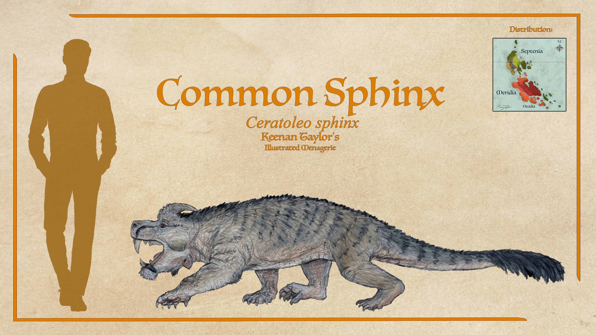
Ceratoleo sphinx
The common sphinx of the southern half of the archipelago is a massive ambush predator. They are proficient climbers, swimmers, and runners. Never the best in any field but they are quite versatile. They really come into their own in raw power. If they can catch prey in their short burst of speed, odds are good they can land a kill, with exceptionally powerful jaws and robust limbs. Though subordinate to dragons in the open forests and thunder crocs in the crocodile jungles, they are still a formidable presence in the Meridian and Occidian ecosystems.
Read species article →Septenian Sphinx
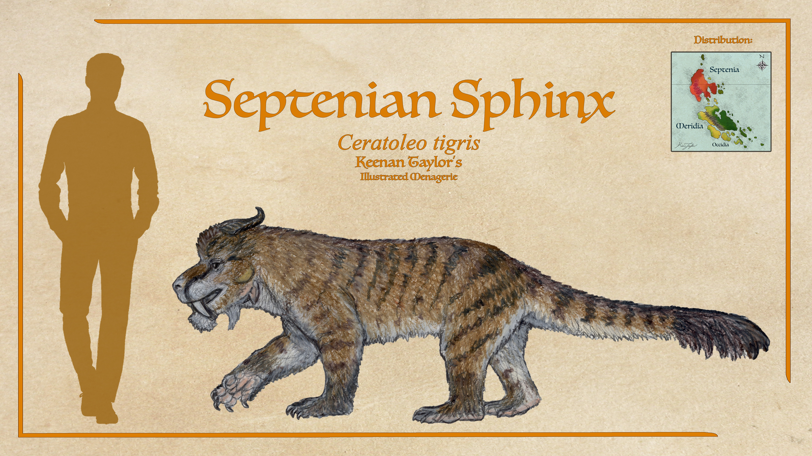
Ceratoleo tigris
Horned tigers, or Septenian sphinxes enjoy more exclusive high status. Most of Septenia is a dense woodland, too cold for giant crocs and too dense for dragons. Females are solitary except their young. Cubs hatch in litters of 3 — 5, and usually leave when the next clutch hatches, though often they remain near their mother until the following cubs hatch. Males will form coalitions of 2 — 3 related males, usually brothers from the same or sequential litter, and establish themselves at a primary water source at the intersection of numerous female territories. They can hunt on their own, but when hunting forest behemoths which some coalitions specialize in, the brothers will hunt together, with the dominant brother usually going for the throat or back of the neck to chew to the vertebrae while subordinate individuals harass and weigh the prey down to exhaustion. Though this behavior has not been observed in common sphinxes, they are more elusive, so it's possible it simply has not been documented or that documentation has not reached the hands of Assembly researchers.
Read species article →Bast
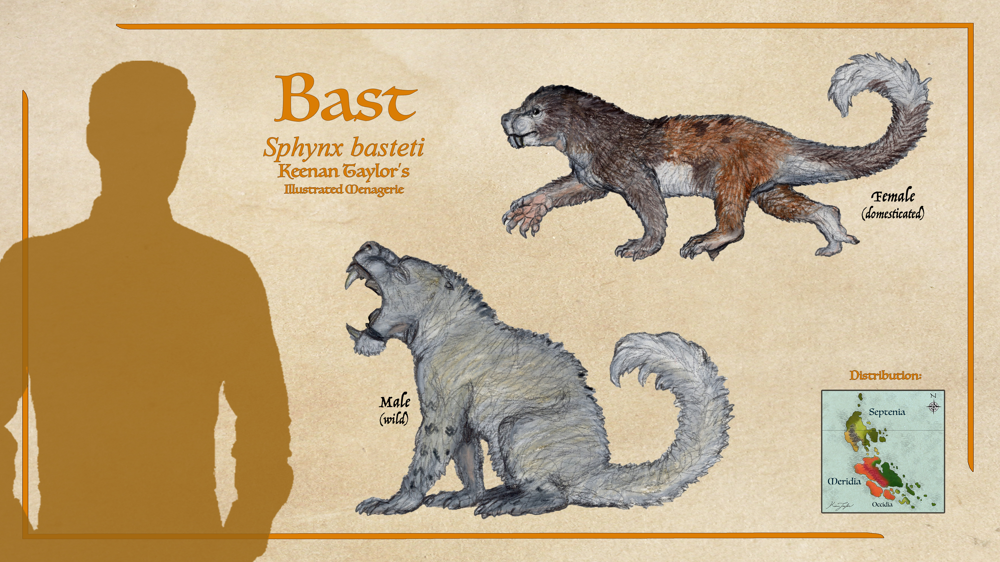
Sphynx basteti
Laelaps are by far the most common house pet kept by peoples of the Permian Islands, being broadly analogous to dogs as social pursuit predators that readily bond with a human family. If laelaps are the dogs, then bast are the cats of this region. Excluding the Crocodile jungle and the eastern tropical satellite islands, its range encompasses all of Meridia, Occidia, and the southern satellite islands. Bast are small, semi-social domesticated predators from the opposite branch of the eborfeltherian tree. They mostly hunt rodents that stowed away to the vast archipelago on the first boats carried by the Homo erectus ancestors of the Permian Islanders and the myriad diversity of little eborfeltherians and other nonmammal therapsids that scurry through thickets and dense brush.
Though bast are found in homes from the southernmost vassal states of Umshaerd north to the islands of the Hob'Token Sea, and their feral populations have a distribution throughout the entire archipelago, this is a consequence of their domestication. Their ancestry and wild representatives are more restricted, being mostly a species found in western Meridia though wild bast are known in the two largest occidian islands. They are mostly associated with open territory, being at their greatest abundance on the savannas, but they do require some cover and often sleep in trees or abandoned dens of animals like small palatheres or dicynodonts. Bast are intelligent, inquisitive, and adaptable predators, able to quickly pivot to new habitat or food if what they are used to face some difficulty. Wild bast are found in forests, deserts, mountains, and wetlands, even if they are most common on savannas, and their feral populations are even more adaptable. Bast toms have been observed taking on prey as much as twice their size on rare occasion, though they prefer game the size of a rat or smaller. On many islands, feral bast have become the apex predators, driving many native animals not used to predators, like flightless birds or large rodents, to endangerment or extinction.
Read species article →Chimera
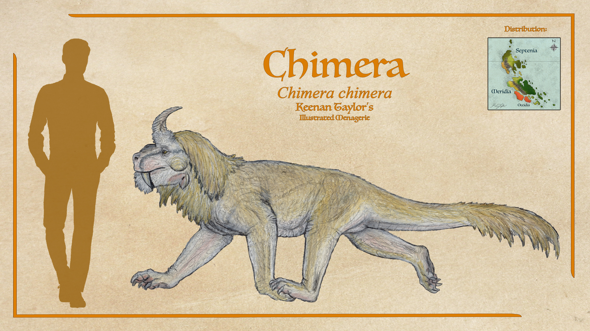
Chimera chimera
But the largest of the extant cat-like gomphoceratians is the Occidian chimera. These predators are a sister genus to the Sphynx genus within the same subfamily. Chimera are also a social giant sphinx, though their social groups are instead female-driven, with 2 — 4 related females defending a water source and usually just a single male defending the pride and their offspring from other males. Though the giant chimera of Meridia and the larger prides of west Occidian chimeras are both extinct, eastern Occidia proved a refuge for the genus. Occidian chimera are a lot smaller than either, with males rarely exceeding 250 kilograms.
They have successfully recolonized western Occidia in recent history according to the Ashdelug naturalists that the librarians from Bolondakoi have spoken with. Though not as successful as the last moroslycans, they are recovering well as prey has become abundant and it is often outside the easy flight of a dragon's den, which must often be on high ground that is rare in Occidia. Though once said to be solitary, they live in prides of increasing size, with a few west meridian prides even having more than one male. It is believed Occidian chimera may spread to Meridia given opportunity that is presently denied them given the Ashdelug population center spans the narrowest strait between West Occidia and Meridia. For now, they are restricted to these southern islands. Many of their prey species and the giants and massive prides of their relatives were driven to extinction by the dragons that now rule the islands, but as prey continue to thrive both to support the current dragon populations and especially where dragons are less common, there may come a time when the more humble modern chimera are able claim the mantle their giant cousins once held before the Age of the Dragons.
Read species article →Wakatelu
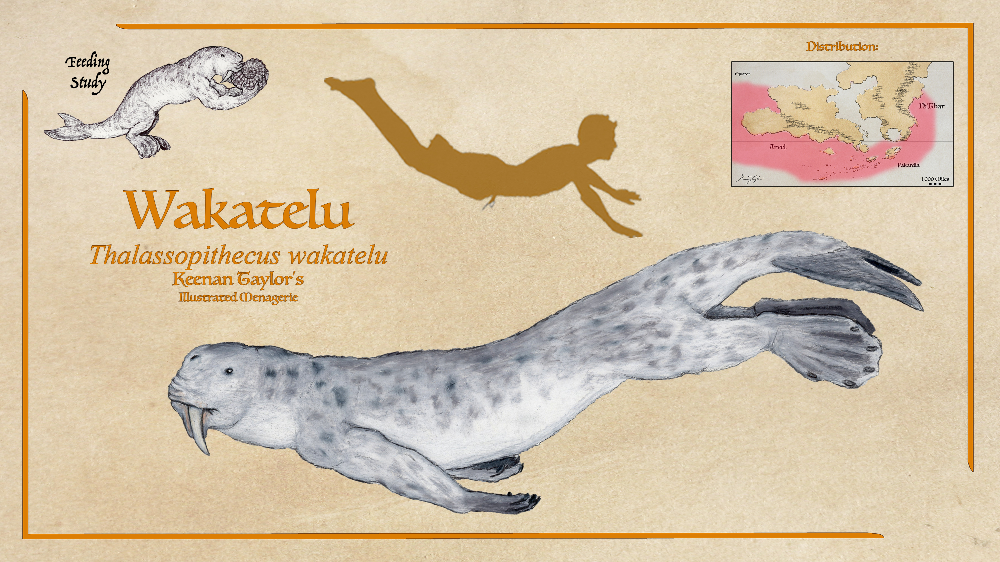
Thalassopithecus wakatelu
Perhaps the most peculiar and specialized predator is the wakatelu. An eborfeltherian which came to the Known World from the distant Permian Islands. They are experts at hunting ammonites using their tusks or fingers to open the aptychi, then high bolted pallets to suction extract the cephalopod. A long pair of saber teeth, flexible arms and strong hands ending in spade-shaped claws, with suction lips and a powerful tongue afford them a superb kit for opening and evacuating ammonites from their shells. This kit allows them to exploit a food source with very little competition. Yes, there are snails, fish, sharks, mosasaurs, and squid all ranging from opportunistic to specialized in this abundant food source, but none are as prolific and successful in the task of killing and eating ammonites as the wakatelu.
Different ammonites require different methods. Some can simply be suctioned out with a kiss of death, though these are rare in shallow waters, no doubt because the wakatelu already hunted this lineage to localized extinction. Others require a claw or two to first be driven between the trapdoor before extraction. The largest they prey upon must either have the saber teeth inserted and twisted to force it open, or struck hard to fracture the aptychus door.
Read species article →Laelaps
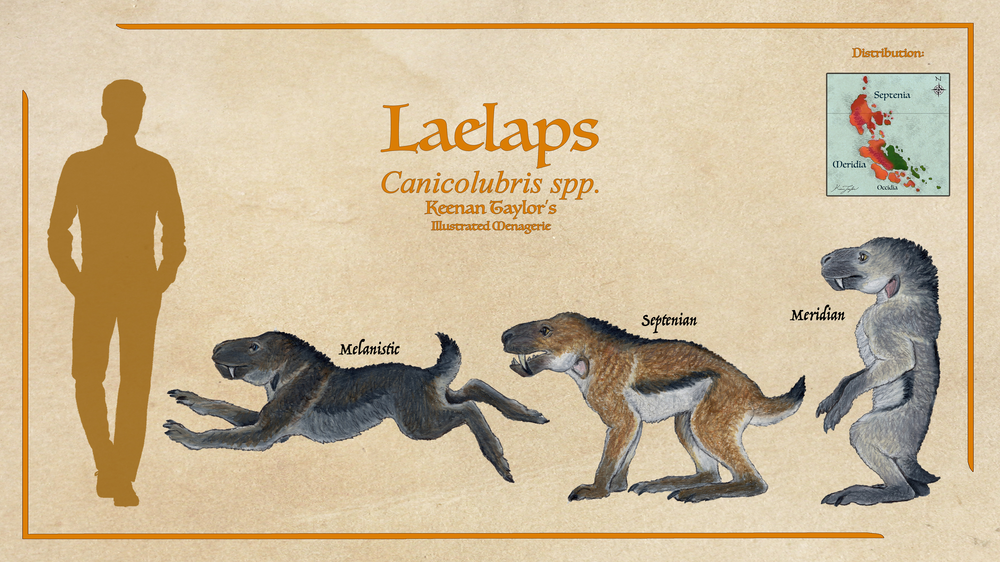
Canicolubris spp.
Many predators on the Permian Islands suffered greatly when the domesticated dragons were made free of their enchanted subjugation to the dragonlords. Some are said to have been directly targeted by dragons, such as the giant hounds or great mountain sphinx, though it seems most instead perished as the enormous dragons with enhanced metabolisms rapidly and ravenously hunted a lot of large game to extinction or restriction to woodlands. However, not all predators were harmed by this development. The laelaps, or sabretooth jackal, absolutely thrived. As they were nocturnal, they already hunted in avoidance of the giant morolycan hounds and sphinxes which once dominated many daytime niches. They just traded the partitioning around one daytime king for another. They are also omnivores, able to supplement their primarily carnivorous diet with vegetation when prey fluctuates.
These social, venomous, intelligent predators were able to punch well above their weight class to target large game that switched to later and later foraging to avoid dragons, and when there was a lapse in game numbers, they could more readily switch to smaller prey or high nutrient vegetation like fruit or legumes, a strategy not readily available to the giant obligate macropredators. Laelaps seem to have gone from a fairly present but unremarkable opportunist to one of the islands top predators in the blink of an eye.
Read Meridian Laelaps article → Read Septenian Laelaps article →Occidian Hyena
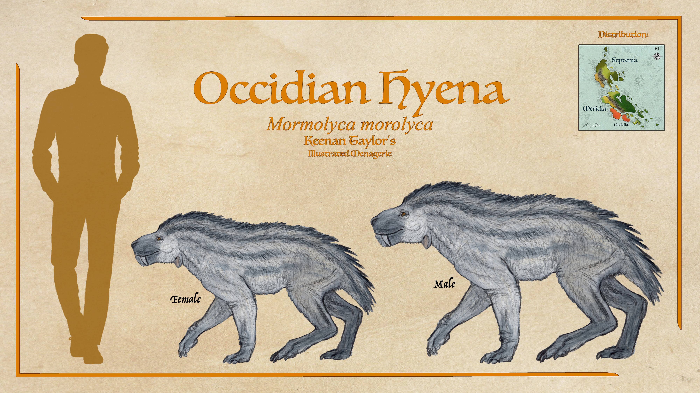
Mormolyca mormolyca
The Occidian hyena or mormolycan, is the last relic of a lost age and is a sister genus of the laelaps. They, like the giant sphinxes of the genus Chimera, were reduced to a small population in eastern Occidian satellite islands, having only recently repopulated the larger Occidian island. Though the giant dragons that wiped out their prey and directly hunted them are extinct as well, leaving modern dragons at a fraction of their former dimensions, the damage was still done and the ecosystem is only just beginning to stabilize over a thousand years later. Dragons remain the apex predators, but the occidian mormolycan likely survived as it was already crepuscular to avoid competition with their bigger cousin, Mormolyca infernocanis, one of Occidia's top predators.
As it stands, these 80 — 110 kilogram predators are still quite large and successful. They have recovered better than their competing Occidian chimeras, though packs of the smaller yet more intelligent, versatile, nocturnal, and social laelaps have hindered their success. Mormolycans do form packs, but this is usually a pair of related males with their mates and offspring instead of the laelaps which can live in far larger and more complex fission fusion groups.
Read species article →Septenian Roo-Hog
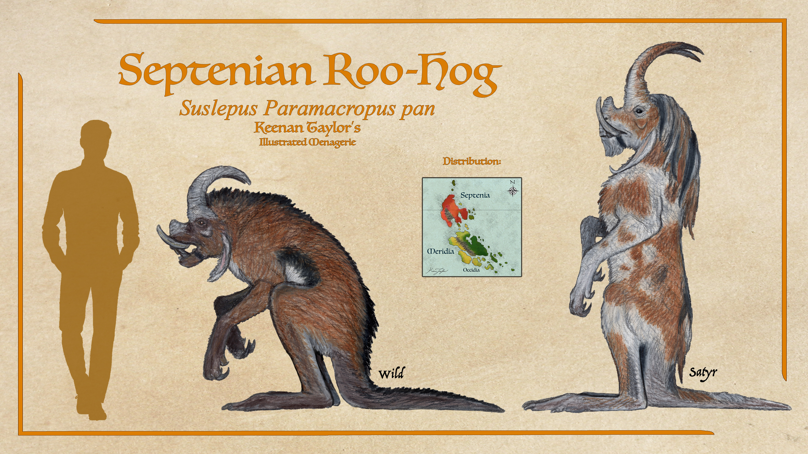
Suslepus (Paramacropus) pan
Roo-hogs are one of the paramacropods, a sister group to the draconiiformes. Paramacropods include the predatory laelaps and numerous genera of herbivores ranging from small rabbit-like burrowers to large browsers and grazers. Suslepus, called Paramacropus more often in older literature, includes numerous smaller species in woodlands and mountains. The open-terrain subgenus Paramacropus are all quite large. Suslepus abandoned their venom to make their tusks less lethal but more effective brawling implements, especially in the males. There are three species on the larger Occidian islands, a Meridian species said to be the swiftest, and the largest is the Septenian roo-hog. These all are thought to derive from the Meridian species, which was able to disperse to neighboring islands at varying points of lower sea level in the past million and a half years, most notably 1.5 million years ago. All hop like a kangaroo and can travel with great speed. The Meridian satyr can hop at over 40 miles per hour, while the smaller Occidian species are almost as fast, and Septenian species which is larger and generally in less even terrain tends to only reach around 30 — 35 miles per hour.
Read species article →Meridian Roo-Hog
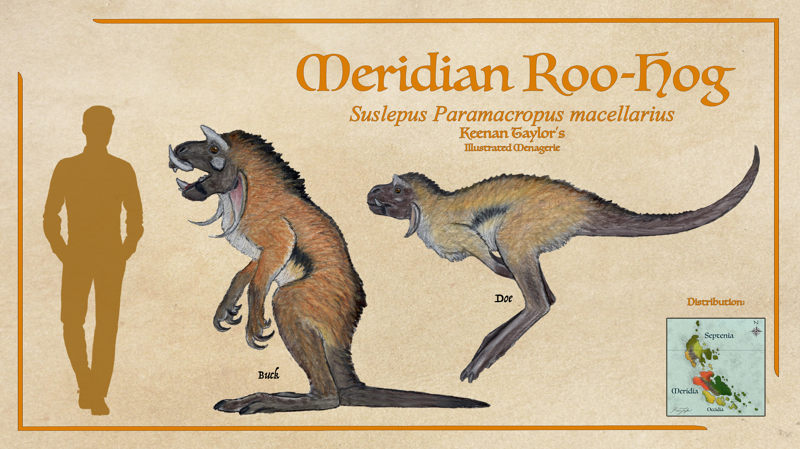
Suslepus (Paramacropus) macellarius
The Meridian roo-hog or southern/Meridian satyr is a very common mixed feeders in the savannas of western and northern Meridia. Because they have regularly growing keratin gomphocorn molar 'teeth' they can process on abrasive vegetation like horsetails that mammals struggle to chew. They live in large mixed-sex herds comprised of many sex-segregated clans. They are extremely fast and efficient travelers, hopping upwards of 40 miles per hour at full sprint.
By their abundance, they are a favored prey of many dragons, with young feeding on organs and adults swallowing them whole. It lives in the wide savannas and grass-mosaic country of western Meridia, where it is one of the most common large herbivores. This form is the most cursorial. Its legs are longer and more slender, the body is slightly narrower, and the hopping stride is more elastic and efficient than in the other species. The muzzle is a little more compressed, the coat shorter, and the overall build lighter, allowing it to reach the greatest speeds.
Read species article →Whitesaddle Faun
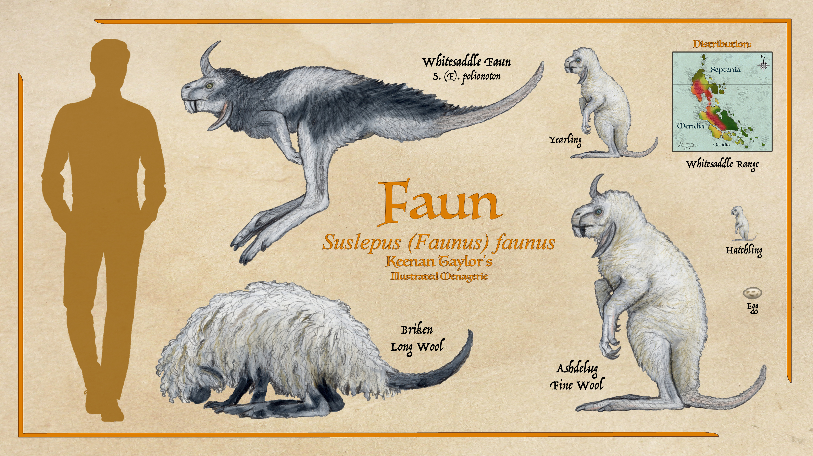
Suslepus (Faunus) faunus
Faun is a polyphyletic term for small species of Suslepus. There are numerous species of faun that have been domesticated, though the Nykoren woolly fauns are the most famous. They have been bred not only to not grow an overcoat, but the filaments of their undercoat quills grow quite prolifically, with a lot more strength so they keep form instead of breaking apart. This gives them a sheep-like woolly appearance. Shearing them is very easy and harmless work. One must simply comb them with a wide-toothed implement, and the wool breaks off at the quill. Assembly agents compare it to feeling like a mix of down and wool. It can be a bit sticky when raw, but if worked a bit by hand and blended with a small quantity of oil, it can be easily worked. While there are many materials that peoples of the island work with, faun wool is among the most common source of textiles.
A notable wild species that is one of the principle descendants of these domesticated breeds is the whitesaddle faun. These animals have a prominent distribution of the Meridian mountains, and the southern Septenian lowlands and its mountain ranges. Adults reach approximately 70 — 100 kg, with males somewhat larger and more heavily armed. It possesses a compact but muscular body, substantial hindlimbs, and a long tail. Unlike the giant roo-hogs, the head is relatively small and the cranial weapons are less elaborate. Its tail is also shorter in proportion to body length than any of the other more lowland roo-hogs, its also more sparsely furred like a rats tail. The male's nasal and brow structures remain prominent but do not develop into the enormous keratinized horns of some Paramacropus. The species is distinguished particularly by its dense pale integument, which gives it the characteristic white or cream coloration. The thick coat is an adaptation to the cooler conditions of the whitesaddle fauns range. The animal retains the characteristic four-toed foot and two-digit weight-bearing hopping stride, although it is less specialized for sustained high-speed locomotion than the Meridian satyr. It is primarily a mixed feeder, taking leaves, shoots, ferns, fruits, seeds, and grasses where available.
Read species article →Redbelly Faun
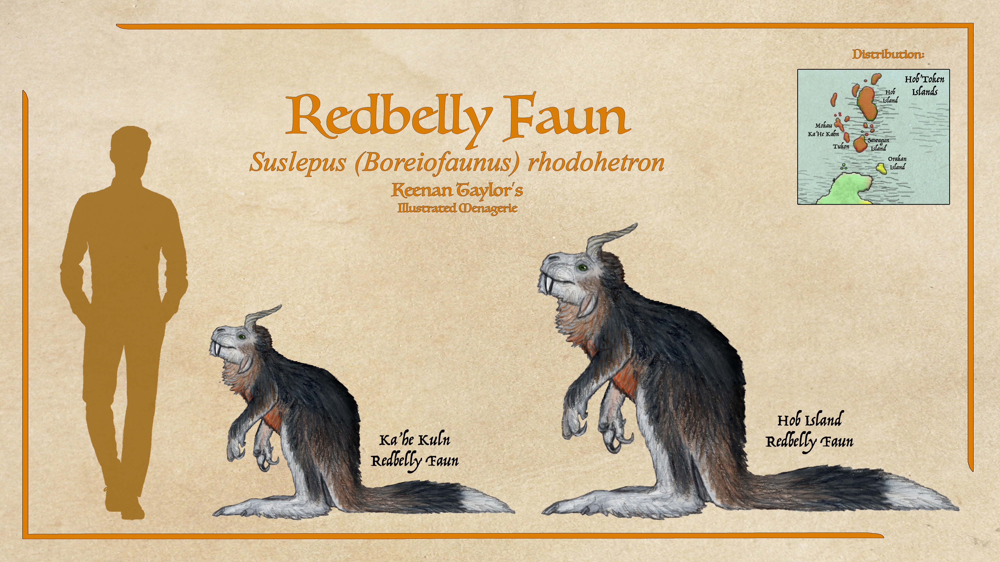
Suslepus (Boreiofaunus) rhodohetron
The redbelly faun is one of the largest animals on many of the hob islands. They are proficient swimmers and island hoppers, a likely key to their dispersal. They are usually included in the genus Suslepus, which has numerous subgenera, but some argue for a distinct genus as they are among the most basal of the genus.
Redbelly fauns are mixed feeders. They live in loose mixed sex herds for most of the year, with clans of ewes and bachelor clans of rams. Females rarely grow fangs. At the breeding season, usually at the end of autumn, males get a surge of testosterone and become very aggressive. They also grow long fangs. It can be difficult to feed with these fangs, so they must bulk up before the season begins. Males have long horns they use to spar, but they retain the long hand claws and fangs their ancestors brawled with, and though they initially engage with headbutts and kicks, if this is insufficient, they are known to bite and claw to much more lethal effect. Once the breeding season concludes, the fangs shed and they calm down, becoming much more tolerant of each other once more.
Adults generally weigh approximately 40 — 80 kilograms, with large males approaching or exceeding the upper end. The body is substantially more compact than that of the other roo-hogs. The hindlimbs remain powerful, but the animal's proportions are less dramatically cursorial. Its forelimbs are also proportionally more shortened than other roo-hogs. The tail is exceptionally long and robust. These are not permanent curling tusks, just permanent maxillary caniniforms.
Read species article →Draconiiformes
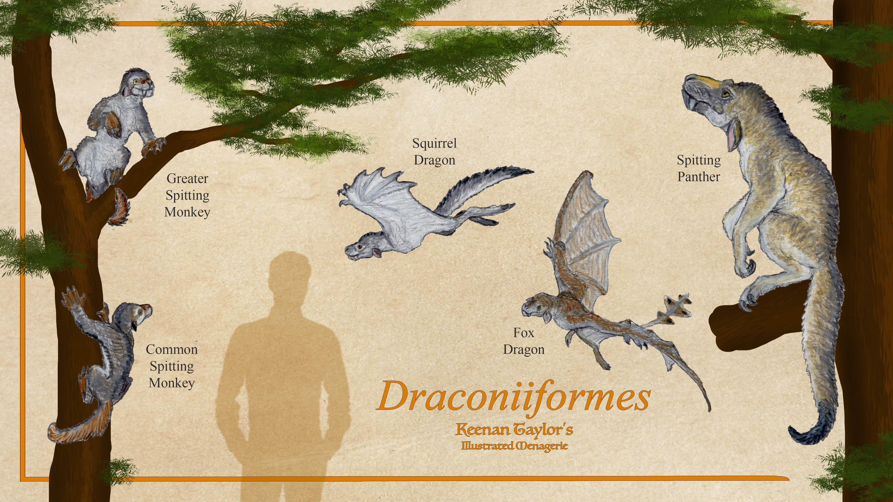
Draconiiformes
The infraorder Draconiiformes is named after the dragons which are the top predators of the islands, but the clade itself is quite diverse. Their most basal members are the spitting monkeys: tiny omnivores which used projectile venom to ward off arboreal cynodonts during the Tyrant Dynasty. As the cynodonts died off, this trait could then be repurposed for predation as well as defense from horned lions, birds of prey, and pterosaurs. The fact that many animals in the canopies now had venom prompted an arms race in diversity, range, and potency of venom, along with different forms of mobility. In the more open forests where the palatheres roamed, gliders proved quite successful and are still very common today. To add stability in their wings, members of the family Draconidae developed a pair of carpal bones which grew long as support struts. Some invested in powered flight, opening their range dramatically. Some competed with anurognathids and newly-arrived bats for the bounty of insects, but the most successful were those who went after the tiny pterosaurs and mammals themselves, such as the fox dragon. When the Dynastic Extinction cleared out the large pterosaurs, these tiny dragons swiftly became massive.
Read Common Spitting Monkey article → Read Greater Spitting Monkey article →Huuskata
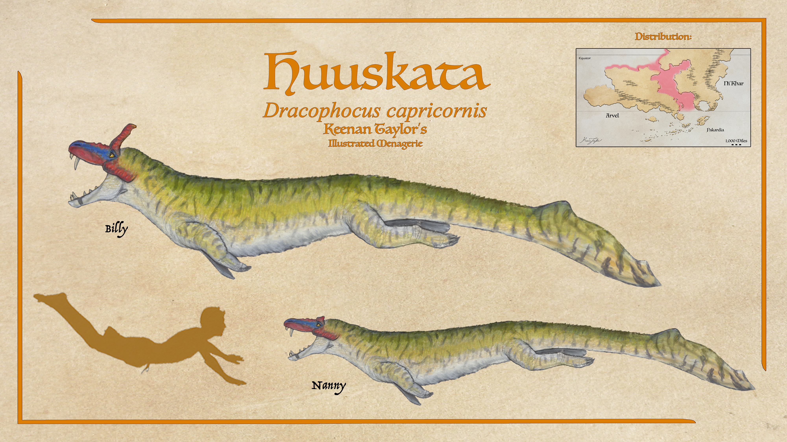
Dracophocus capricornis
The only of these animals to have a population within the known world is the Capricorn, huuskata, or common reef dragon. They are a very recent migrant, and are very much in the shadow of the katabo. They are generalist predators, patrolling the reefs in search of any number of fish, crustacean, and mollusk prey. They are intelligent, persistent, and inquisitive predators.
Capricorn have no cold water tolerance so rarely travel south of the Kentarim Islands. As females must still climb ashore to lay eggs and guard them for over a month, they are restricted in size. Males in particular have vibrant colorful displays, which become particularly vibrant during the mating season, but thankfully their colors fade even under a few meters of water so don't much inhibit their hunting. They are good climbers, so females can usually nest on places inaccessible to most potential raiders. Their venom spray isn't much use underwater. For males, it is brightly colored and an important component of their mating display, and both sexes spray to ward off threats while resting on land. The venom can cause temporary blindness to mammals in particular, so they are often left alone once they comfortably establish themselves.
Read species article →Great Jötunnhundr

Jotuncyon brontocetus
While Capricorn are tropical dragons, most of their cousins are temperate animals. A few polar examples do exist, like the jötunnhundr. These are mostly fish and squid hunters whole lounge on the beaches of the north polar continent in their thousands. They are a large and abundant species, but as many as a dozen smaller polar sea dragons have been identified. Early on they were mistaken for seals or sea lions, and in niche and social structure they are quite analogous.
Read species article →Tiamat
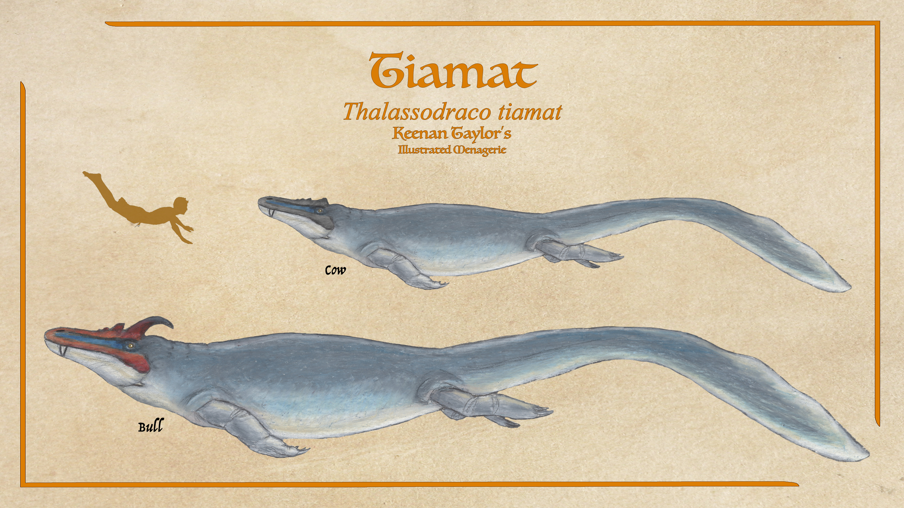
Thalassodraco tiamat
Largest of these therocephalians is the Tiamat. Exceptional specimens can reach sixteen meters, making them among the largest marine predators ion the northern hemisphere. Cows must still haul out on shore to nest, so they are capped at roughly the same size as the largest prehistoric crocodiles between eight and eleven meters, but bulls are much more aquatic. Females are generally most abundant in the temperate waters, but males congregate to join the filter feeder hunts in the polar summers.
Like other Draconiiformes, they spit venom. As with their cousins, the males incorporate this into a radiant multicolor display which can be ten meters high in healthy bulls. Females generally spray venom to defend themselves while on land, a time when they are otherwise vulnerable.
Read species article →Vanyu
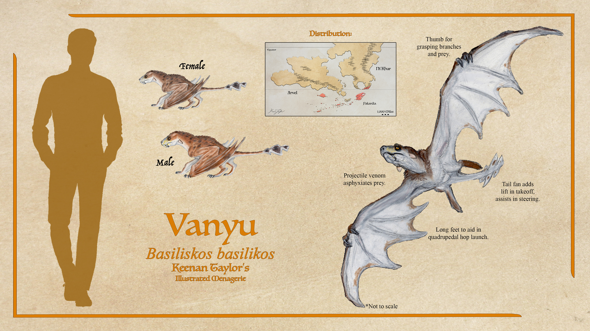
Basiliskos basiliskos
Many of the dinosaurs and other enormous reptiles in the Known World were called dragons. The enormous megaraptoran theropods called to mind enormous drakes capable of formidable destruction. Mosasaurs evoked the sea serpents and leviathan itself, ripping apart vessels they deemed a rival. Some of these dragons, however, were of much more humble dimensions. Among the most fascinating to many in the Assembly was not the imposing giants, but a small winged creature found in numerous Khalin islands and Pakardia. The vanyu or Kaimeran basilisk.
Vanyu have a warm blooded, or endothermic, metabolism. They need a lot of food and dense integument to maintain this high body temperature. Though not mammals, their integument is thought to either be hair or an analogous filament. They grow with branches superficially similar to feathers, fraying as soon as the living tissue within the follicle is ejected. They are sometimes called pterempalin or 'reverse feathers' because like the barbs of porcupine quills, the branches grow down from a cap as they grow from follicles, and therefore look like a 'reverse feather when development is complete. Unlike continuously-growing hair, these reverse feathers grow fast to completion, then fall out before a new pterempalin grows in. Especially on Pakardia and islands on which it regularly rains, they must keep this coat well-oiled.
Read species article →Common Wyvern
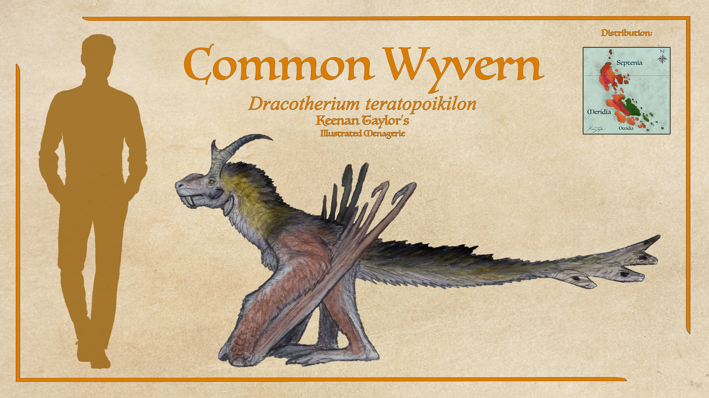
Dracotherium teratopoikilon
The common wyvern is an abundant species of dragon. Most have a balanced pelt of red, gold, black, and white, though one of these pelt hues being quite dominant is fairly common. While wild dragons are functionally extinct, subsumed and outcompeted by feral descendants of domesticated dragons, wyverns are still quite common. Having greater precision with their venom, their venom being less potent and therefore less expensive, having superior agility, and being more social than wild dragons, their integration into the domesticated population is believed to have been important in producing the final stock of dragons. Wild dragons are thought to have had only grey, black, and white fur, so the red and yellow mutations common in dragon coats are thought to be a secondary consequence of these unions, as is the longer neck and more focused spray of some breeds (which became a more random mutation as the domesticated dragons became an unregulated wild population). As modern feral dragons and wyverns seem incapable of reproducing, it may be that magic was instrumental in this process, though it could also be that feral dragons are now so heavily manipulated by the process of their domestication through enchantment that they are no longer compatible.
Read species article →Green Wyvern
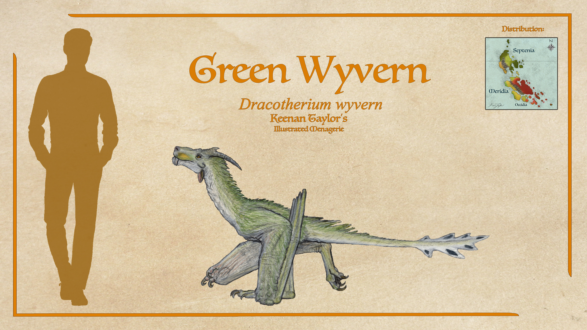
Dracotherium wyvern
The jungle or green wyvern is the smallest of the three species of Dracotherium. They are proficient climbers though often hunt on the ground. They have short yet very broad wings compared to their relatives, helping to fly in their dense forest home. That said, much of their flight is gliding, sometimes with wings only half open. They have several more neck vertebrae compared to common wyverns and dragons. Their venom also is more of a focused jet and is more potent than the wider spray of common wyverns and many dragons.
Read species article →Dragon
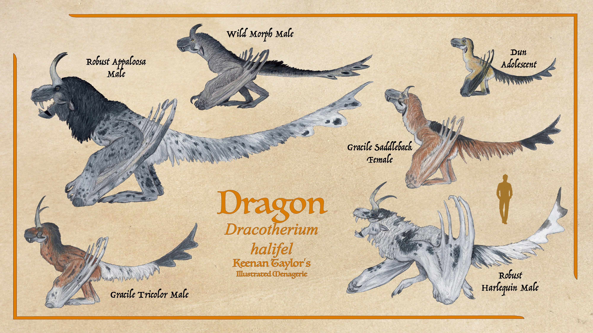
Dracotherium halifel familiaris
Dragons are large, volant synapsids. They are one of the largest animals on the Permian Islands and are distinguished by said size, as well as their 4 strutted wings, sail like skin on the end of the tail, and large facial protrusions. While all members of the Eborfeltheria have gomphocorn teeth, these keratinous tooth analogs were were lost in the draconids to make more room in the jaw for their venom glands, which only have a narrow cartilage floor.
In Dracotherium this is especially exaggerated. Their serrated incisors coupled with a corrosive spray each time they bite means there's really no need for molars and chewing. Also, this means they are pretty wasteful eaters: if they can't swallow it whole, they can only feed on organs and limb meat/other muscle concentrations. This very well suits their ecology as the 'lord providers' of the beasts on the Permian Islands.
Like other Ebolfeltherians, dragons possess venom, and like their smaller relatives, they are able to project this venom from holes along the anterior blade of the caniniforms, this venom is potent to therapsids, and most deadly to humans, with some believing this trait came from defense against the large cynodonts which ruled the islands prior to the Dynastic Extinction. Mammals, such as humans, are not only blinded by the toxins, it triggers an asphyxiating allergic reaction. Dragon venom is often used to blind or asphyxiate prey. However, many targets have developed facial features to resist its effects. There's enough acid in their breath to be painful, and some dragons just use it to corral prey to favorable kill sites. Studies showing some of the significant features of dragons. Although wild dragons had three glands of venom (Primary venom gland at the maxilla, secondary venom gland within the throat, and the tertiary venom gland located within the body) in the placement of domesticates. One feature of the domesticates was to dramatically increase the size of these glands and the rate of venom production.
Read species article →04 · CLASSIFICATION
Taxonomic Notes
Eborfeltherians belong to Therapsida, within the broader group of therocephalian synapsids. Their closest known relatives are believed to have been venomous therocephalians related to Euchambersia, although the precise ancestry of Eborfeltheria remains uncertain. The venom system appears to have been inherited from this ancestral condition, although the possibility that venom evolved independently within the eborfeltherian lineage has not been completely excluded.
The name Eborfeltheria is generally applied to the entire radiation of these derived therocephalians, while the modern group is divided into two principal evolutionary lineages: Gomphoceratia and Paramacropodia. These two clades diverged early in the history of the radiation and subsequently explored substantially different ecological strategies.
Gomphoceratia includes the Gomphoceratidae or palatheres, and the Sphinxidae which are more commonly called sphinxes. Gomphoceratians are particularly characterized by their specialized gomphocorn teeth, keratinous post-canine structures that replaced the ancestral post-canine dentition. These structures became especially important in herbivorous members, where they form powerful grinding surfaces, but predatory sphinxes independently modified them into cutting and crushing structures.
Paramacropodia represents the more diverse branch of the radiation. Its members include the rabbit-like and hare-like forms, roo-hogs, laelaps, morolycans, dragons, aquatic thalassopiths, and numerous other specialized lineages. The name refers to the characteristic hindlimb construction shared by many members, which resembles the saltatorial anatomy of kangaroos and lagomorphs. Not all paramacropods are hoppers, however, and the lineage eventually produced animals specialized for running, climbing, swimming, gliding, and powered flight.
The distinction between these two lineages is therefore primarily evolutionary rather than ecological. Both contain predators and herbivores, and both have repeatedly evolved similar ecological strategies independently.